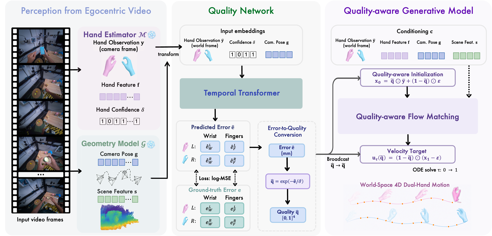

Recovering world-space 4D motion of two interacting hands from egocentric video is a fundamental capability for supervising robot policy learning, where wrist trajectories track the end-effector and finger articulations specify the grasp pose. Two major challenges arise in this setting: hands frequently leave the camera view for extended periods due to head motion, and persistent hand–object interactions cause severe occlusions of one or both hands. Existing methods uniformly condition on noisy hand motion observations without accounting for their per-frame reliability, leading to substantial performance degradation.
Our key insight is that accurate world-space hand motion estimation is tightly coupled with the quality of per-frame hand observations. To this end, we decompose the quality of hand observations extracted from an off-the-shelf hand pose estimator into four channels: wrist global translation and finger articulations for both hands. We propose StableHand, a quality-aware flow-matching framework conditioned on these four-channel quality signals, which are predicted by a learned quality network. We naturally incorporate the quality signals into the flow-matching process through a per-channel forward schedule, a quality-adjusted velocity target, AdaLN modulation of the DiT denoiser, and a quality-aware ODE initialization. This unified generative process preserves high-quality observations while reconstructing unreliable ones using a learned bimanual motion prior.
Experiments on HOT3D and ARCTIC, two egocentric benchmarks featuring long missing-hand spans and persistent hand–object occlusions, show that StableHand achieves state-of-the-art performance across all reported metrics, reducing W-MPJPE by 20–25% compared to the strongest baseline, with the largest gains on heavily occluded ARCTIC sequences.

From an egocentric video, frozen off-the-shelf modules produce per-hand MANO observations together with camera and scene context. StableHand consists of two learned modules:
World-space dual-hand trajectories on HOT3D.
StableHand re-anchors when observations resume, while the camera-view WiLoR baseline drifts across long missing-hand spans.
World-space dual-hand trajectories on ARCTIC.
Under persistent bimanual occlusion, StableHand preserves both hands' trajectories while baselines collapse the occluded hand to a generic prior.
@article{zeng2026stablehand,
title = {StableHand: Quality-Aware Flow Matching for World-Space Dual-Hand Motion Estimation from Egocentric Video},
author = {Zeng, Huajian and Yao, Chaohua and Zhang, Yuantai and Yang, Jiaqi and Potamias, Rolandos Alexandros and Zuo, Xingxing},
year = {2026},
}